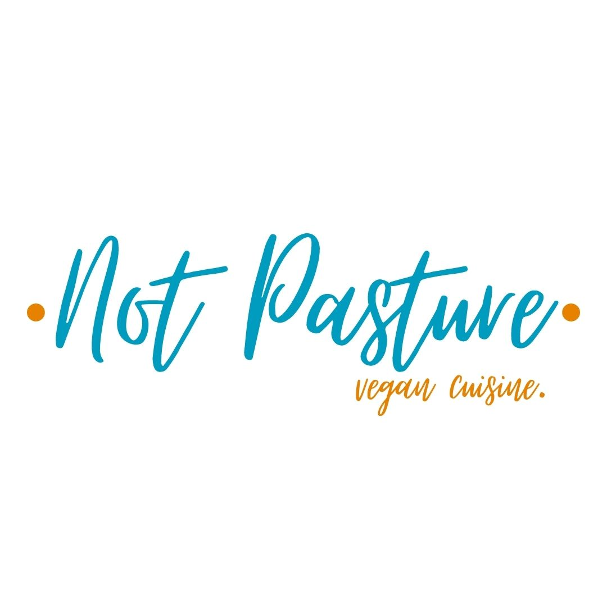

Somos una familia que abrió las puertas de su casa. Hace dieciocho años que, a través de nuestros platos sanos, nutritivos y exquisitos nos dedicamos a difundir una filosofía de alimentación consciente. Tenemos un compromiso orientado al cuidado de nuestro planeta y de nuestros organismos. Creemos que desde nuestro lugar podemos brindar una experiencia de sabor y responsabilidad.
Cocinamos con los que nos ofrece la naturaleza sin contaminar: vegetales y frutas cosechadas en el día, cereales y harinas molidas en molinos de piedra, y aceites de primera presión en frío. En BIO Restaurant solo usamos productos orgánicos. Somos el primer restaurant Orgánico Certificado de la Argentina. Creemos que la nutrición más elevada es la que proviene de la naturaleza; el sistema de producción orgánico crea, recupera y preserva los agroecosistemas y la biodiversidad, en pos de proteger la calidad de vida de la generación actual y de las futuras, manteniendo intacto el sabor de los alimentos y siendo socialmente justa y responsable.
En Not Pasture somos vegetarianos por elección. Adoptamos el vegetarianismo como filosofía y práctica de vida por cuestiones éticas, ecológicas, económicas y saludables. La dieta vegetariana es completa, en ella abundan las albúminas, los hidratos de carbono, las grasas, las sales minerales, las vitaminas, las enzimas esenciales y el agua. Creemos que es posible comer bien, con alimentos que aporten energía y nutrientes sin necesidad de comer carne, viviendo en armonía y respeto recíproco con la naturaleza y con todas las especies que en ella habitan. Además, la gran mayoría de nuestros platos son aptos para veganos.
Confiamos en la sabiduría ancestral de nuestros abuelos que elegían cuidadosamente la verdura, que nos transmitían los secretos de las recetas familiares; no conocían la comida chatarra y compartían la mesa, charlando, saboreando, alimentando el alma y el cuerpo. Por eso proponemos volver al origen y redescubrir el alimento.
Pensamos que desde nuestro lugar en el mundo podemos generar hábitos de alimentación más saludables, que amplíen el grado de conciencia y de felicidad de los hombres. Si todos cambiamos nuestra manera de comer no solo nos beneficiamos con más salud, más energía y vitalidad, sino también repercute en la economía, en la ecología, en el cuidado del agua y del suelo.
Cocina consciente en un ambiente armonioso es la gran propuesta de Not Pasture.
